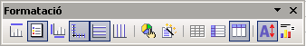

Formatació dels diagrames
Barra d'eines Formatació
Un cop s'ha creat un diagrama, aquest apareix envoltat d'un requadre de color gris amb 8 punts de control. També, les barres d'eines de El LibreOffice Calc hauran estat substituïdes per una versió reduïda de la barra d'eines Estàndard i la barra d'eines Formatació en la qual es mostren diferents eines que permeten canviar les opcions del diagrama.

D'esquerra a dreta, les eines disponibles en aquesta barra són:
Titol activat/desactivat
Fa aparèixer o amaga el títol del diagrama
Llegenda activada/desactivada
Fa aparèixer o amaga la llegenda del diagrama
Títols dels eixos activat/desactivat
Fa aparèixer o amaga els títols dels eixos del diagrama
Mostra/oculta les descripcions dels eixos
Mostra o amaga els valors, numèrics o descriptius dels eixos
Graella horitzontal activada/desactivada
Mostra o amaga les línies de graella horitzontals del diagrama
Graella vertical activada/desactivada
Mostra o amaga les línies de graella verticals del diagrama
Tipus de diagrama
Permet adjudicar un altre tipus i variant de diagrama, així com canviar la presentació entre diagrama en dues o tres dimensions
Formatació automàtica
Torna a activar l'assistent de creació de diagrames a partir del 2n pas (no permet canviar l'àrea de dades definida per al diagrama)
Dades en files
Determina que siguin els valors situats en les files els que es representin al diagrama
Dades en columnes
Determina que siguin els valors situats en les columnes els que es representin al diagrama
Reorganitza el diagrama
Situa en les posicions predeterminades els elements del diagrama (títols, àrea del diagrama, llegenda, …) que s'hagin pogut desplaçar manualment
Redimensiona el text
Es tracta d'una eina commutador (es pot activar o desactivar). Si està activada, en canviar la grandària del diagrama, els textos canvien de mida per adaptar-se a l'espai del diagrama.
Menú Insereix i Format
Permeten establir les característiques de format del diagrama d'una forma més efectiva. Contenen opcions que no hi són a la barra d'eines Formatació
Insereix
Conté les opcions que permeten Mostrar aspectes relatius a: Títol, Llegenda, Etiquetes de dades, Eixos, Graelles i Estadístiques
Format
Permet establir les característiques de format de: Títol, Llegenda, Eix, Graella, Pla lateral del diagrama, Base del diagrama (per a diagrames 3D)i Àrea del diagrama.
També Conté, igual que en la barra d'eines Formatació, les opcions Tipus de diagrama i Formatació automàtica